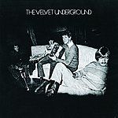

Lou Reed: A Life In Music (Part One)
Words like ‘legend’ and ‘genius’ are thrown around far too often by people writing about music. Paragraphs that begin by bemoaning the overuse of these words as a device to highlight a particular artist’s legend or genius are also abused from time to time. This is not one of those occasions. Through his work in The Velvet Underground, as a solo artist, and as a collaborator, Lou Reed unquestionably earned the right to be called a genius. In a career spanning nearly fifty years, he changed the course of popular music forever.
Over the coming week, in tribute to the great man, we will be celebrating Lou Reed’s extensive catalogue. It would seem trite to reduce such as inspirational body of work down to “Ten Essential Lou Reed Songs” or something similar, so we’re going to write about pretty much everything he recorded in a studio setting. We hope you enjoy reading our thoughts on Lou’s career and would love for you to share your own memories in the comments field below.
Click here for Part 2 (1975 to 1989) and here for Part 3 (1990 to 2011)
. . .
Part One: 1967 to 1974, The Velvet Underground and Solo Beginnings
The Velvet Underground & Nico (1967)
Is it even possible the measure the magnitude of this album’s influence at this point? Whether you were one of the handful of people who bought it upon its release or you were one of the millions of kids looking up its tracks online forty years later, odds are each person learned something new about music their first time listening to this album. And the lesson might not have always been the same for everyone – maybe you were entranced by the swooning, lucid melodies of tracks like Sunday Morning or Femme Fatale, or maybe your first listen of Heroin shook you like nothing else before, teaching you how emptiness can be made to sound so beautiful and incredibly terrifying at the same time. No matter what kind of music lover you started out as or eventually became, there’s a good chance that this album – whether it was a song or two or the entire record – meant something to you at some point. (Peter Quinton)
White Light/White Heat (1968)
Everybody seems to have a story of the first time they heard a Lou Reed track, usually Heroin, usually in a record store, as a teenager, as a novice, totally transformed. But I don’t have that story. I didn't think about it, but I always had the Velvet Underground all around me. Growing up in Andy Warhol’s home town, I was taking middle school writing class field trips to his museum and penning poetic homages to pop art that have since been lost to wherever it is scribblings go after a few decades. I spent days there among the mylar balloons and the cow head wallpaper, gawping at the time capsules, running my hands through countless issues of Interview. They screened Warhol’s sado-masochistic films and somehow I felt empowered. I initiated Rocky Horror virgins in the museum theater on a whim, one Saturday midnight. I bought a camouflage condom at the gift store for laughs (“they'll never see you coming”), then was forced to use it in dire teenaged circumstances. Coming of age was Lou Reed.
White Light/White Heat was such an obvious tear-away from the banana album, from Warhol and Nico, an evolution into distortion and avant garde that would later feed into the simplicity of their self-titled a year later. My obsession with it mirrored my own evolution. Where my neophyte child ears needed pop semblance, by the time I was in a college that had its own avant garde music major, I was ready for this gorgeously minimal, hastily recorded album. It was my first entree into the truly weird. It’s the reason I love the Pixies. It's the reason I can’t break myself way from lo-fi. The Gift on its own is so jaw-dropping; in one ear John Cale tells me in a dandy deadpan Lou Reed's foray into creative writing, while in the other plays a gritty and minimalistic rock’n’roll track. The Gift was the best blend of story-telling and music that I’d heard since Tom Waits... and it preceded him, too. Poor Waldo Jeffers. I grit my teeth every time I listen, but I can't stop myself.
This is the album that pushed me forward from my mid-90s Beatles fanaticism. I can’t credit it for making me want to write music criticism, but I sure can credit Lou Reed, that rat fucking bastard who walked out on Terry Gross on Fresh Air in 1998, the genius who could get away with it. (Gabbie Nirenburg)
The Velvet Underground (1969)
I was 17 when I first heard The Velvet Underground on a mix-tape. There were 6 or 7 Velvets tracks on side A, mostly from the band’s debut; the flipside was packed full of Big Star songs. Needless to say, that humble cassette pretty much blew my teenage mind. I promptly bought The Velvet Underground & Nico, which fuelled my transition from casual music fan with a special interest in Britpop to obsessive CD collector and independent publisher. It is a vital record, certainly, but in many way the band’s third effort is my personal favourite. The Velvet Underground is the sound of the band stripped bare; it’s less about the sonics, more about the songs, and nine absolute classics at that. The Murder Mystery, presumably included to prove they could still experiment in John Cale’s absence, is the only thing approaching a misstep, and even then it’s still pretty decent.
Lester Bangs famously asked the readers of Rolling Stone “how do you define a group like this, who moved from Heroin to Jesus in two short-years?” It’s a great soundbite, of course, but how many artists have made similar leaps and with such (critical) success? I believe the answer you’re looking for is none. (David Coleman)
Loaded (1970)
Maybe Loaded is the most straightforward of the Velvet Underground’s albums (the self-titled at least had Murder Mystery), and maybe the slow songs on this aren’t as good as the slow songs on their previous effort, but Loaded has a lot more than just Sweet Jane. While that track is the unquestionable highlight of the album – and one of Lou Reed’s greatest songs – Loaded offers a glimpse of a new Reed, one who favors irony and antithesis in his lyrics more than bluntness. That Reed turned a request to make an album “loaded with hits” into a major curveball, something that would become commonplace in his career (I’m looking at you, Metal Machine Music) and still succeeded artistically is no minor achievement. Maybe someone would call it “selling out,” but this is another sign of growth in a music career that was still in its infancy. Put aside what you think the Velvet Underground *should* do and embrace what they do – you’ll get a great record in Loaded for it. (Forrest Cardamenis)
Lou Reed (1972)
Though Loaded is more representative of Reed’s beginnings as a solo artist, it wasn’t until two years later that he signed a recording contract with RCA to properly record what has to be one of the most overlooked records in his canon of work. And with good reason – Lou Reed is a work in progress, an oddly curated collection of rough drafts that feature many songs he wrote with the Velvets after the release of their self-titled LP, some of which got better treatment when MGM unearthed VU in 1985. It’s the first time we heard Lou Reed’s iconic I Can’t Stand It, though the recording was so poorly handled you can hardly discern its soulful backup vocals or fuzzy guitar dynamics. Most daunting was enlisting Yes members Steve Howe and Rick Wakeman to play as backing musicians, which gave swaggering tracks like Walk and Talk It a hard rock edge when the spirit was still primal rock n’ roll. But hidden in all the dredge lie some of Reed’s most overlooked songs – Wild Child has a trudging groove that hits a high once it arrives at its whip-smart chorus, and Love Makes You Feel is his fitting tribute to Byrdsian jangle, a softly strummed number with an endearing gesture that shows his talent to write a honeyed melody with some bite to it. But we didn’t have to wait much longer for Reed to hits his stride; Transformer was just around the corner. (Juan Edgardo Rodriguez)
Transformer (1972)
I may have started with Transformer. I don’t remember a time before Walk on the Wild Side, but I do remember the first time Satellite of Love really grabbed me. In the late 90s I got sucked into the glam rock resurgence. Velvet Goldmine, a sometimes unwatchable film starring Ewan McGregor and Jonathan Rhys Myers as vague amalgams of Bowie, Reed, Iggy Pop, and other legends, turned me on to a bygone scene. Their trippy amusement-park love scene set to the beautiful Satellite really sealed the deal. I was fourteen and so far from glamorous. I wanted everything to do with Ziggy Stardust/Maxwell Demon. I may as well have been the fanatic Christian Bale in the movie, I identified with him so much. By the time Hedwig and the Angry Inch came around, I had already fully committed to the androgynous, transgendered vamping that was so emblematic of my heroes. Remember Hedwig with her head in the oven? I can think of no better tribute.
Transformer, to me, is Reed's strongest solo album. It soundtracked my college years. Purer rock’n’roll than the Velvets, it made me feel like dancing. I still can't help it. Hangin’ Round especially holds a soft spot in my heart. Jeanie’s mentholated fate was mine, and I felt like there I was, right there in Lou’s song, happy to be discarded with every other character. Looking back, singing along, I feel like I’m addressing my younger self: “you're still doin’ things that I gave up years ago.” And while I prefer the upbeat numbers, I will never forget Perfect Day, and this time it’s not because of a movie (though I have only good things to say about Trainspotting). One night before bed, an erstwhile crush and I, chatting online, simultaneously sent each other song links to say goodnight. I sent him Perfect Day. He sent me Nico's These Days. The jaw-dropping stochasticity of it all cemented us together. And though that love has since dissipated, I know that he still looks at the famous Lisa Law photograph of the two in 1966 I had framed for his birthday, and thinks about what could have been. (Gabbie Nirenburg)
Berlin (1973)
Over the course of a single album, Lou Reed takes us through a relationship characterized by prostitution and drug use and physical abuse and completely denies catharsis and redemption. It’s very liberally produced, with horns and strings and choirs around, and Reed’s lyrics are either genius works of melodrama or a genius’ most melodramatic work, depending largely on listener’s perspective. Still, there remains very little like it. This is an album that screams “opus,” and as the album materializes into distinct acts through multi-act songs, each a beautiful, bloated work, that feeling never goes away. From the grandiose opening of the title track to the rhetorical lyrics and horns and guitar solo combination of How Do You Think It Feels and the contemplative The Bed, each track is a work worth unpacking on its own. Any album that calls itself a tearjerker, including indie darlings In The Aeroplane Over the Sea and Hospice owe at least a little to Berlin. (Forrest Cardamenis)
Sally Can't Dance (1974)
In a review penned for Lou Reed’s 1974 release, Sally Can’t Dance, critic Robert Christgau wrote, “Lou sure is adept at figuring out new ways to shit on people.” Sally Can’t Dance is a heavily arranged and decorative album, pleasant and agreeable next to the then-debatable genius of Berlin and the tuneless and maligned (though ahead of its time) Metal Machine Music. It would soon be realized that Reed was not done “shitting on people” as Christgau put it, and Sally Can’t Dance is, in its horn-encumbered and musically grand splendor, in line with the blue-eyed soul David Bowie would explore with Young Americans and the overblown resignation of an album like John Lennon’s Mind Games (Reed sings lines as phoned in as, “She walks down St. Marks place/And eats natural food at my place”). In spite of that, the track Baby Face is electric and sly, N.Y. Stars has a great bass-driven groove and Billy is a very powerful tale addressing the possible dangers of following the path of least resistance, in some ways a fitting allegory within Reed’s own evolution as an artist. (Sean Caldwell)
. . .
In part two, we pick up the story with Metal Machine Music and follow Lou's career through the 1980s.
4 November, 2013 - 18:26 — No Ripcord Staff